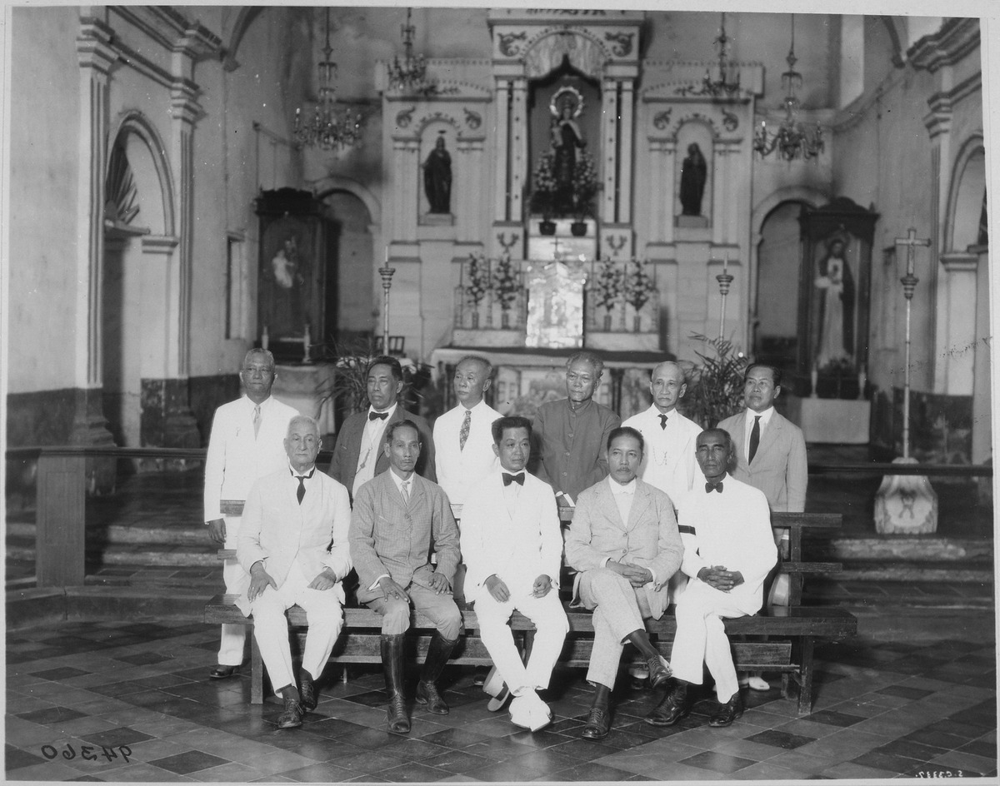

President of the Cabinet
Apolinario Mabini (January 2 – May 7, 1899)
Pedro Paterno (May 7 – November 13, 1899)
Secretary of Foreign Affairs
Apolinario Mabini (October 1, 1898 – May 7, 1899)
Secretary of the Interior
Teodoro Sandico (January 2 – May 7, 1899)
Secretary of Finance
Mariano Trías (January 2 – May 7, 1899)
Hugo Ilagan (May 7 – November 13, 1899)
Severino de las Alas (May 7 – November 13, 1899)
Secretary of War and Marine
Baldomero Aguinaldo (July 15, 1898 – May 7, 1899)
Mariano Trías (May 7 – November 13, 1899)
Secretary of Justice
Gregorio Araneta (September 2, 1898 – May 7, 1899)
Secretary of Welfare
Gracio Gonzaga (January 2 – May 7, 1899)
Felipe Buencamino (May 7 – November 13, 1899)
Maximo Paterno (May 7 – November 13, 1899)
Secretary of Agriculture, Industry and Commerce
León María Guerrero (May 7 – November 13, 1899)
President of the Revolutionary Congress
Pedro Paterno
Vice President/Deputy
Benito Legarda
Secretary
Gregorio S. Araneta
Pablo Ocampo
Members (Representatives)
Manila
Teodoro Gonzalez Leano
Fellix Ferrer
Arsenio Cruz Herrera
Mariano Limjap
Batangas
Mariano Lopez
Gregorio Aguilera
Eduardo Guiterez
Ambrosio Flores
Bulacan
Ambrosio Rianzares Bautista
Mariano Crisostomo
Pedro Serrano
Trinidad Iscasiano
Cavite
Jose Basa
Hugo Ilagan
Jose Salamanca
Severino De Las Alas
Camarines
Justo Lucban
Tomas Arejola
Valeriano Velarde
Mariano
Ilocos Sur
Mariano Fos
Ignacio Villamor
Fransisco Tongson
Ilocos Norte
Gregorio Aglipay
Martin Garcia
Pio Romero
Jose Luna
Primitivo Donato
Pedro Paterno
Laguna
Higinio Benitez
Graciano Cordero
Manuel Sityar
Mauricio Ilagan
Pampanga
Joaquin Gonzalez
Jose Infante
Ramon Henson
Enrique Macapinlac
Pangasinan
Vicente Del Prado
Sebastian De Castro
Antonio Feliciano
Adriano Garces
Iloilo
Esteban de la Rama
Melecio Figueroa
Venancio Concepcion
Tiburcio Hilario
Cebu
Ariston Bautista
Trinidad Pardo de Tavera
Felix David
Francisco Macabulos
Leyte
Simplicio Del Rosario
Rafael Guerrero
Marciano Zamora-Concepcion
Lucio Navarro
Albay
Salvador Del Rosario
Marcial Calleja
Pantaleon Garcia
Honorato Agrava
Cagayan
Vicente Guzman Pagulayan
Bataan
Jose Tuazon
Pedro Teopaco
Hermogenes Marco
Isabela
Eustacio Del Rosario
Raymundo Alindada
Abelardo Guzman
La Union
Joaquin Luna
Mateo Del Rosario
Miguel Paterno
Nueva Ecija
Jose Santiago
Epifanio de los Santos
Gregorio Macapinlac
Tarlac
Juan Nepomuceno
Victoriano Tanedo
Julian Carpio
Tayabas
Sofio Alandy
Basilo Teodoro
Jose Espinosa
Zambales
Juan Manday Gabriel
Felix Bautista
Alejandro Albert
Sorsogon
Manuel Xerex Burgos
Pedro Lipana
Maximo Hizon
Negros Occidental
Jose De La Vina
Antonio Montenegro
Juan Benson
Negros Oriental
Pío del Pilar
Luciano San Miguel
Mariano Oirola
Samar
Javier Gonzalez Salvador
Servillano Aquino
Juan Tongco
Capiz
Miguel Zaragoza
Mariano Bacani
Juan Baltazar
Antigua
Ariston Gella
Vicente Lopez
Eusebio Natividad
Bohol
Pedro Liongson
Tranquillano Aquino
Labio
Zamboanga
Felipe Buencamino
Tomás Mascardo
Lazaro Tanedo
Misamis
Teodoro Sandico
Apolonio Mercado
Gracio Gonzaga
Calamianes
Narciso Hidalgo Resureccion
Norberto Cruz Herrera
S. Isidro
Masbate
Alberto Barretto
Maximo Cabigting
Mindoro
Antonio Constantino
Perfecto Gabriel
Arturo Dancel
Morong
Jose Oliveros
Marcelo Mesina
Lepanto
Reymundo Jeciel
Antonio Rebello
Leon Apacible
Batanes Islands
Daniel Tirona
Vito Belarmino
Nueva Vizcaya
Evaristo Panganiban
Hipolito Magsalin
Abra
Isidro Paredes
Juan Villamor
Padre Burgos
Benguet
Joaquin Baltazar
Sixto Zandueta
Ceferino De Leon
Catanduanes
Marcelino Santos
Jose Alejandrino
Paragua
Felipe Calderon
Domingo Colmenar
Palaos
Isidro Tiongco
